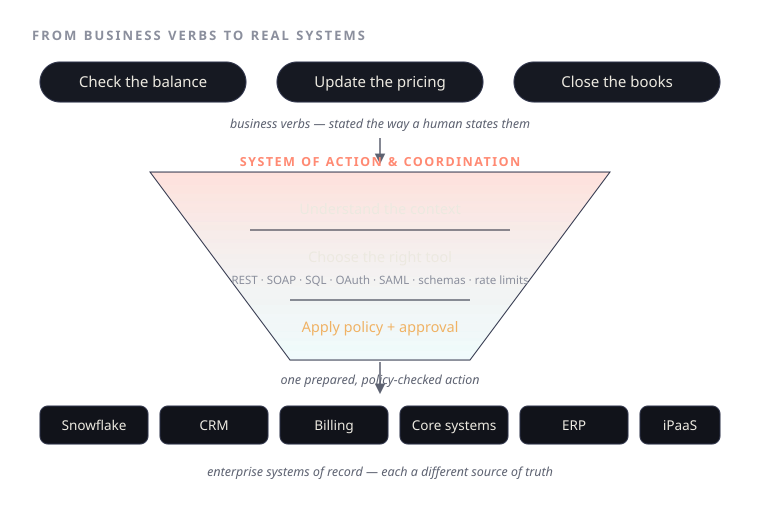
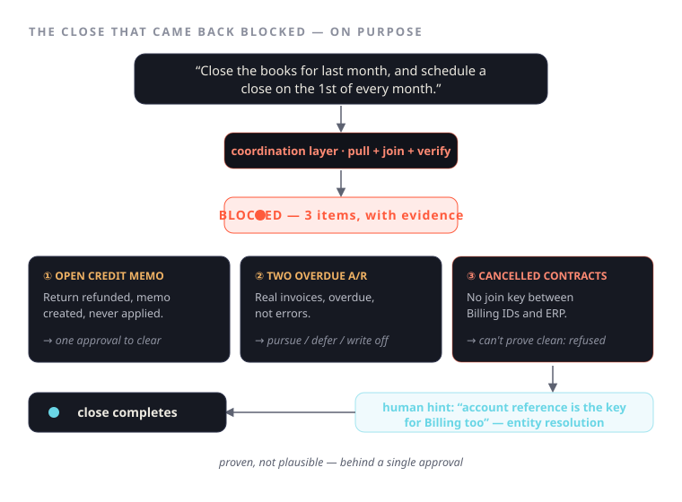

The System of Action: Why "Close the Books" Is Harder Than Any Model
An operator speaks in business verbs. Six enterprise systems speak in incompatible APIs. Here's the layer in between — and the demo where the right answer was to stop.
Ask anyone who runs operations what they do all day and you'll hear verbs. Check the balance. Create the record. Update the pricing. Draft the response. Close the books.
You will not hear "authenticate against the CRM's REST API, run a SQL pull from Snowflake, page through the Billing system's invoice events, then map them onto ERP records." Yet that second sentence is the actual labour hiding behind the first. The business runs on verbs; the systems run on APIs; and the distance between the two is where operators lose their evenings and finance teams lose their quarter-ends.
Most "enterprise AI" lives on the wrong side of that gap. It can summarise your business beautifully and act on it not at all. The interesting engineering was never the model — every serious team is renting the same two or three frontier labs. It's the layer that turns a verb into a safe, correct action across systems of record that were never designed to agree with each other. Call it a System of Action & Coordination.
That's the layer in the first diagram, read left to right.

Business verbs come in. Check the balance, update the pricing, close the books — stated the way a human states them, with none of the system detail filled in.
The tool surface does the unglamorous middle. It understands the context of the request, chooses the right tool from a genuinely hostile surface — REST here, SOAP there, raw SQL, OAuth and SAML scopes, mismatched schemas, rate limits — and then applies policy and approval before a single write happens. The funnel in the diagram is the point: many possible tool calls go in, one prepared, policy-checked action comes out.
Enterprise connections sit underneath. Snowflake, the CRM, Billing, Core systems, the ERP, the iPaaS fabric. Same business intent. Different systems of record. One coordination layer.
Stated as a diagram it sounds tidy. The second diagram is where it earns its keep, because the right answer there was to not finish the job.

The request: "Close the books for last month, and also schedule a close on the 1st of each month."
The response: blocked. Deliberately.
A weaker system returns "Done ✅" and a clean summary. This one returned evidence and three open questions:
- An open credit memo — a customer's return was processed, the refund went through, the credit memo was created, and it was never applied. Still open against the month.
- Two overdue receivables — both legitimate enterprise invoices, not errors, but overdue and needing a human decision before the month locks: pursue, defer, or write off.
- Cancelled contracts — indeterminate. A batch cancelled in the period. Every cancelled contract's Billing record showed a paid or zero balance, but without a direct join key between the Billing account IDs and the ERP's own record numbers, the system could not confirm 1:1 that none still carried open revenue. So it refused to declare them clean.
It also caught a rounding mismatch on a separate credit memo — the kind of thing that's immaterial right up until an auditor finds it first.
That third item is the whole thesis in miniature. The easy move is to assume the cancellations reconcile and move on. The honest move is to admit you can't prove it yet and say so. The resolution arrived as a single human hint: "The account reference is the key for Billing too, like the CRM." That's cross-system entity resolution — the join that lets you match a cancelled contract to the exact ERP record and prove the books are clean rather than assume it.
Notice the shape of the work in the run itself: skill up on the financial-close task, list the cases, drop into code to pull and join the real records, read the result, code again to verify, and only then let the system commit. Each step is inspectable. Nothing irreversible happens without an approval.
This is the part I keep coming back to. The value isn't a system that closes your books. It's a system that knows when it can't — that stops, shows its working, and asks for one decision instead of manufacturing a confident, wrong one. Across systems, the failure mode is never "the model wrote a bad sentence." It's "the model assumed two records matched when nothing guaranteed they did." Verifiable joins and approval gates are what stand between a demo and a system you'd actually let touch the general ledger.
What it unlocks is small to say and hard to build: one business command, many systems coordinated, safe execution with approvals.
The model was never the hard part. The coordination layer is.